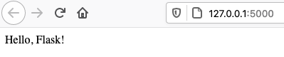
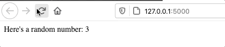

21.3. Your First Flask App¶
A Flask application is just a Python program that uses some specific tools. To use these resources, we must first import them. We also need to learn some new syntax and organize our code in a very specific way.
21.3.1. Initial Code¶
In the hello_flask directory, create a new Python file called hello.py.
Next, paste this code into the file, then save. We’ll discuss what each line
does in a moment.
1 2 3 4 5 6 7 8 9 10 11 12 | from flask import Flask
app = Flask(__name__)
app.config['DEBUG'] = True
@app.route('/')
def hello():
message = "Hello, Flask!"
return message
if __name__ == '__main__':
app.run()
|
Here is the breakdown for the code:
- Line 1: This imports the
Flaskclass from theflaskmodule. - Line 3: A lot of work goes on behind the scenes when this statement
runs.
- It creates an object called
appfrom theFlaskclass. We will use the object’s methods to control the flow of data between the Python code and our webpages. - The
__name__argument tells Flask where to find any other files we create for our program.
- It creates an object called
- Line 4: Turns on a debugging mode. This allows us to update our Python code and see the results while the program is running.
- Line 6:
@app.route()is called a decorator. This links a function to a particular URL. When the user visits that URL in their browser, it triggers the function. We will take a closer look at this on the next page. - Lines 7 - 9: The
hello()function returns themessagestring we want to display in the browser. - Lines 11 - 12: Checks to make sure the Python file is being run as the
main program instead of a module. If the condition is
True, thenapp.run()executes and starts our Flask application.
Note
If you are using Replit create a new python repl and change lines 11 -12 to:
11 12 13 14 15 | if __name__ == '__main__':
app.run(
host = '0.0.0.0',
port = 8080
)
|
21.3.2. Launch the App¶
The code above is a very small, but still functional, web application. Our next step is to launch it and see what it looks like in a browser.
To start a Flask application, we follow three basic steps:
- Activate the virtual environment,
- Launch a Python/Flask program,
- Open a web browser and navigate to a specific IP address.
Try It!
Make sure you are in the hello_flask directory first. Then:
In the terminal, activate the virtual environment with the command
. hello-env/bin/activateon a Mac, or. hello-env/Scripts/activateon Windows. You should see(hello-env)appear before the terminal prompt.From the terminal, run the
hello.pyprogram. LOTS of text will follow the command.1 2 3 4 5 6 7 8 9 10
(hello-env) $ python hello.py * Serving Flask app "hello" (lazy loading) * Environment: production WARNING: This is a development server. Do not use it in a production deployment. Use a production WSGI server instead. * Debug mode: on * Running on http://127.0.0.1:5000/ (Press CTRL+C to quit) * Restarting with stat * Debugger is active! * Debugger PIN: 722-822-088
Mac users: Remember to use
python3.You only need to pay attention to two lines:
- Line 1 launches the
hello.pyprogram. - Line 7 tells you that Flask started a server on your machine. It also shows you the IP address for that server.
- In this example, the address is
http://127.0.0.1:5000. The exact numbers might be different on your machine, however.
- Line 1 launches the
Open a new tab in your web browser. Copy/paste the URL into the address bar.
Ta da! There’s our webpage.
Navigate to the IP address shown in the terminal to see the message from your Python code.¶
Note
If you are using Replit.com remember to run from the shell tab.
21.3.2.1. Change the Python Code¶
Right now, the webpage at http://127.0.0.1:5000 displays the text Hello,
Flask! This matches the value assigned to the message variable in the
Python code. Let’s see what happens when we change this.
Assign a different string to the
messagevariable. Save, then refresh the page in the browser.Notice that the text on the webpage changes to match. Updating the Python code affects what we see in the browser! This is what Flask does. It connects a Python program to a webpage.
Let’s do more. On line 2 in
hello.py, import therandommodule.1 2
from flask import Flask import random
Now update the
hello()function as follows:7 8 9 10 11
@app.route('/') def hello(): message = "Here's a random number: {0}" num = random.randint(1, 25) # Select a random integer from 1 - 25. return message.format(num)
Save, then refresh the webpage several times. With every refresh, the
hello()function runs again, and line 10 assigns a new random number tonum. Notice that the message in the browser changes to display the new number.
21.3.3. Add Some HTML¶
Right now, the hello() function returns a string, which appears on the
webpage. However, this string value does not have to be simple text. Let’s see
what happens when we include some HTML tags:
Example
Put some h1 tags around the message in line 9:
9 | message = "<h1>Here's a random number: {0}</h1>"
|
When we save our code and refresh the page in the browser, we will see a change in the text:
Nice! We now have an h1 heading on the page.¶
When the hello() function returns a string, Flask sends that string to the
browser. Just like we saw with the first HTML page we
built, a browser renders plain text as… plain text. However, by adding HTML
tags to the string, we can tell the browser how we want to structure the page.
Try It!
Let’s add a form and a button to our webpage.
Modify the
hello()function as follows:8 9 10 11 12 13 14 15 16
def hello(): page = """ <h1>Here's a random number: {0}</h1> <form> <button>New Number</button> </form> """ num = random.randint(1, 25) return page.format(num)
Save the code, then refresh the page. Click the New Number button several times.
Since we include no
actionattribute inside the<form>tag, clicking the button submits the form to the current URL. This causes the page to refresh and display a new random number.
Note how lines 9 - 14 resemble a simple HTML document. By enclosing the HTML code in triple quotes (to allow for multiple lines), we can return it from the function as a single string value.
When the browser receives the results of page.format(num), it ignores
the quotes and renders the HTML code.
21.3.4. Stopping the Application¶
The app.run() statement loops continuously. This lets the Flask server wait
for incoming HTTP requests. The program runs in a holding pattern until it
receives a request, then it processes the data and sends back a response.
This wait/receive/respond cycle continues until we deliberately shut it down.
To stop our Flask sever and web application, type Control+c in the
terminal. Once done, refreshing the page in the browser results in an
Unable to connect error. The server is off, so requests made to it receive no
response.
Tip
Now would be a good time to commit your work to the hello_flask
repository.
21.3.5. Video Summary¶
This video relates to the content on the First Flask App and the Routes pages.
21.3.6. Check Your Understanding¶
Question
In the terminal, how can we tell if a virtual environment is active?
- The command
python --versionworks. - The name of the environment appears before the terminal prompt.
- A directory for the environment appears in the project's file tree.
- Global temperatures stabilize because of our new, carefully maintained environment.